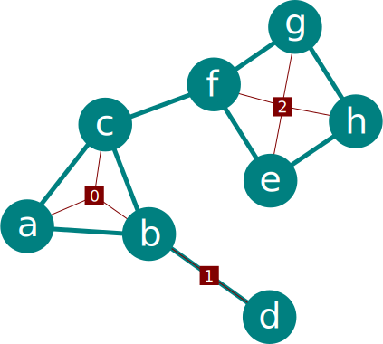

Markov Logic
Logic, Probability, Learning
Motivation
| Language | Ontological commitment | Epistemological commitment |
|---|---|---|
| First-Order Logic | Facts, objects, relations | True | False | Unknown |
| Probability Theory | Facts | Degree of belief \(\in [0, 1]\) |
| Markov Logic | Facts, objects, relations | Degree of belief \(\in [0, 1]\) |
Adapted from Russell & Norvig (3rd ed., p 290).
In a nutshell
- ...Markov logic is about learning first-order logic sentences, each assigned with a probability \(\in [0, 1]\).
- Probability theory offers soft constraints, a world where many sentences are proven wrong is not impossible, but less likely.
- The more confident we are in a sentence contradicted by some evidence, the less likely the world is.
- Markov logic is a stict superset of first-order logic since \(p = 1.0\) is equivalent to true, and \(p = 0.0\) is equivalent to false.
- And it also a subperset of discrete and finite-precision probability distributions. That is: it has been proven that every probability distribution over discrete or finite-precision numeric variables can be represented as a Markov logic network.
The case for Markov Logic
- Logic for complexity. Probability theory for uncertainty (e.g. collective classification of links).
- Not a black box: FOL sentences are easy to understand (example).
- Facilitates human interventions (knowledge engineering).
- Facilitates computer interventions (e.g. Mihalkova's transfer algorithm).
First-Order Logic
How expressive / powerful is first-order logic?
The general consensus is that it's powerful enough to formalize much of modern mathematics, but not enough for some nuances of natural languages.
Bottom line: it's very expressive, and since it's enough for modern mathematics, it's probably enough for most (or all) knowledge engineering.
Terms
...refer to objects, which can be anything from integers to species, cities, words...
- Variables, e.g. \(x, y, z\). The convention is to start variable names with a lowercase character. A variable ranges over objects of a certain type.
- Constants, e.g \(Wolf, 0, Tokyo\), represent actual objects in the domain.
- Functions, which are mappings between 0 o more terms and another term.
Atomic sentences
An atomic sentence is an element that, alone, is a valid first-order logic sentence.
- True or top: \(\top\), and it's negation False or bottom: \(\bot\).
- Predicates, which are mappings between 0 or more terms to a truth value. They have the same form as functions but can be distinguished by the context: predicates are atomic sentences, not functions.
- Identity, represented by the mysterious = symbol, tests if two terms are the same. Identity can be (and often is) seen as a predicate with two arguments.
A few sentences
\[PrimeNumber(11)\]
\[PrimeNumber(Minus(8, 1))\]
\[\top\]
\[FatherOf(Jesus) = God\]
\[Identity(FatherOf(Jesus), God)\]
\[Dist(Helsinki, Jerusalem)\]
\[Dist(Helsinki, Jerusalem) = 7653.8km\]
\[GreaterThan(Dist(Helsinki, Jerusalem), Dist(Montreal, Quebec))\]
\[Dist(Helsinki, Jerusalem) > Dist(Montreal, Quebec)\]
Connectives
...connect sentences
- The binary connective and: \(x \land y\), which is true only if both \(x\) and \(y\) are true. Like all other connective shown here, if \(x\) and \(y\) are sentences, then \(x \land y\) is also a valid sentence.
- The binary connective or: \(x \lor y\), which is true only if \(x\) is true, if \(y\) is true, or if both are true.
- The binary connective implies: \(x \implies y\), returns true in all cases, except if \(x\) is true and \(y\) is false.
- The binary connective iff: \(x \leftrightarrow y\), returns true if \(x\) and \(y\) have the same value, that is if they are both true, or both false.
- The binary connective xor (exclusive or): \(x \oplus y\), returns true if \(x\) and \(y\) have different values.
- The unary connective not: \(\lnot x\), which is true only if \(x\) is false.
- The qualifiers for all and exists (respectively \(\forall\) and \(\exists\)).
Grounding
We talk of a ground term or ground sentence if no variables are present.
\[\forall y \exists x, y \neq White \implies BrighterThan(x, y)\]
\[BrighterThan(Pink, Red)\]
Second and Higher-Order Logic
\[\forall n\ GermainPrime(n) \implies PrimeNumber(2p + 1)\]
\[\forall n\ GermainPrime(n) \implies PrimeNumber(Add(Multiply(2, p), 1))\]
\[\forall x\ Pierre(x) \land Roule(x) \implies \lnot AmasseMousse(x)\]
Santa Claus is a sadist
\[Sadist(SantaClaus)\]
Santa Claus has all the attributes of a sadist
\[\forall foo(Sadist)\ foo(SantaClaus)\]
Example 0: A bit of arithmetics
- Let's define the predicates GreaterThan, SmallerThan, Equal, each taking two real numbers.
- Then, we can define the functions Addition, Multiplication, each taking two arguments (real numbers) and returning a real number.
\[42 > 2 \times 6\]
\[GreaterThan(Addition(40, 2), Multiply(2, 6))\]
\[\forall x\ GreaterThan(1, Multiply(0, x))\]
\[\forall x, y\ Equals(Addition(x, y), Addition(y, x))\]
\[\lnot \exists x, y, z\ Equals(z, Addition(x, y)) \land GreaterThan(z, Addition(x, y)) \]
\[GreaterThan(2, 6)\]
\[Multiply(2, 6)\]
Logic as a Metalanguage
A language is the set of objects, functions, and predicates allowed, along with methods to evaluate them.
E.g. we can evaluate a sentence with \(Presence(GreyWolf, France)\) by providing the answer to an evaluation function, or have it look at a database.
Example 1: Peano axioms
\[NatNum(0)\]
\[\forall n\ NatNum(n) \implies NatNum(S(n))\]
\[\forall n\ 0 \not= S(n)\]
\[\forall m, n\ m \not = n \implies S(m) \not = S(n)\]
\[\forall m\ NatNum(m) \implies Addition(0, m) = m\]
\[\forall m, n\ NatNum(m) \land NatNum(n) ⇒ Addition(S(m), n) = S(Addition(m, n))\]
Knowledge engineering
Knowledge engineering is the task of establishing the rules for some system. It is common in engineering, business intelligence, health informatics, chemo-informatics, logisic problems, etc etc. Normally, it is done by deciding on a set of first-order sentences.
Example 2: Ecology?
\[s0: Presence(GreyWolf)\]
\[s1: \forall x,y,z\ PreyOn(x, z) \land PreyOn(y, z) \implies Compete(x, y)\]
\[s2: \forall x,y\ PreyOn(x, y) \implies Larger(x, y) \lor Parasite(x)\]
\[s3: \forall x,y\ SameNiche(x, y) \implies \lnot CoOccur(x, y)\]
\[s4: \exists x\ NumPreys(x) = 0\]
\[s5: \forall x,y,z\ NumPreys(x) = 1 \land NumPreys(y) = 1 \land PreyOn(x, z) \land\]
\[PreyOn(y, z) \implies \lnot CoOccur(x, y)\]
A Few Gotchas
Implication works well with the \(\forall\) qualifier:
\[\forall x,y,z\ PreyOn(x, z) \land PreyOn(y, z) \implies Compete(x, y)\]
\[\forall x,y,z\ PreyOn(x, z) \land PreyOn(y, z) \land Compete(x, y)\]
...but be careful when the left side is rarely true (solution: types), it messes up probabilistic inference. Think of the above sentences if x, y, z ranges over all objects (cities, people, species) vs only species.
Qualification order
"Everybody loves somebody":
\[\forall x \exists y\ Loves(x, y)\]
"There is someone who is loved by everyone":
\[\exists y \forall x\ Loves(x, y)\]
The qualfications should be read:
\[\forall x\ (\exists y\ Loves(x, y))\]
Order of Precedence
...differs from author to author.
A common scheme: \[\lnot, =, \land, \lor, \implies, \oplus, \iff\].
My FOL parser (https://github.com/PhDP/Gryffon)
$ git clone https://github.com/PhDP/Gryffon.git
$ cd Gryffon
$ sbt console
scala> parseSentence("Forall m, n m != n => S(m) != S(n)")
res0: Option[gryffon.reasoning.Sentence] = Some(∀m ∀n m != n ⇒ S(m) != S(n))
scala> res0.get.showStruct
res1: String = ForAll(Variable(m), ForAll(Variable(n), Implies(Not(Identity(Variable(m), Variable(n))), Not(Identity(Function(S, List(Variable(m)), Function(S, List(Variable(n)))))))
scala> parseSentence("Equals(Addition(1, 2), 3)")
res2: Option[gryffon.reasoning.Sentence] = Some(Equals(Addition(1, 2), 3))
scala> res2.get.showStruct
res3: String = Predicate(Equals, List(Function(Addition, List(Constant(1), Constant(2)), Constant(3))$ cat data/Ecology.txt Forall x,y,z PreyOn(x, z) and PreyOn(y, z) => Compete(x, y) Forall x,y PreyOn(x, y) => Larger(x, y) or Parasite(x) Forall x,y SameNiche(x, y) => !CoOccur(x, y) Exists x NumPreys(x) = 0 $ sbt console
scala> import scala.io.Source
scala> val lines = Source.fromFile("data/Ecology.txt").getLines
scala> lines.foreach { s => println(parseSentence(s).get) }
∀x ∀y ∀z PreyOn(x, z) ∧ PreyOn(y, z) ⇒ Compete(x, y)
∀x ∀y PreyOn(x, y) ⇒ Larger(x, y) ∨ Parasite(x)
∀x ∀y SameNiche(x, y) ⇒ ¬CoOccur(x, y)
∃x NumPreys(x) = 0
Markov Networks
Also known as undirected graphical models or Markov random fields (from their origin in statistical physics).
A Markov Network is an undirected graph used to compress complex probability distributions into a manageable structure.
They are mostly defined by maximal cliques and the resulting bipartite factor graph.
Most (deep) neural network models (e.g. Boltzman machines) are either Markov networks, or closely related.

A Markov Network with 8 variables, 9 edges, and 3 factors:
\[MaxCliques: [(a, b, c), (d), (e, f, g)]\]The factor graph in red has square vertices for factors (or features), linked to the vertices holding the variables.
Markov network are often used as log-linear models:
\[P(X = x) = \frac{1}{Z}\exp\left(\sum_j w_j f_j(x)\right).\]
With \(Z\) being a factor for normalization.
There is no closed form solution for maximum likelihood or maximum a posteriori probability, but since the function is concave, it is fairly easy to compute with gradient methods.
Markov Logic Networks
The Gist of It
A Markov Logic Network \(L\) is a set of tuples made of first-order logic sentences and weights: \(L = (s_0, w_0), (s_1, w_1), (s_2, w_2), ...\)
0.9 Forall x,y,z PreyOn(x, z) and PreyOn(y, z) => Compete(x, y) 1.4 Forall x,y PreyOn(x, y) => Larger(x, y) or Parasite(x) 1.1 Forall x,y SameNiche(x, y) => !CoOccur(x, y) 0.8 Exists x NumPreys(x) = 0
Where's my Network?
Together with a finite set of constants \(C = c_0, c_1, ...\), the Markov logic network \(L\) defines a Markov network \(M_{L,C}\) as follow:
- \(M_{L, C}\) contains one binary vertex for each possible grounding of each predicate appearing in \(L\). The value of the vertex is 1 if the ground predicate is true, and 0 otherwise.
- \(M_{L, C}\) contains one feature (vertex of the factor graph) for each possible grounding of each sentence \(s_i \in L\). The value of this feature is 1 if the ground formula is true, and 0 otherwise. The weight of the feature is the weight associated with \(s_i\) in \(L\).
The facts
Friends(Anna, Bob) Friends(Anna, Edward) Friends(Anna, Frank) Friends(Edward, Frank) Friends(Gary, Helen) !Friends(Gary, Frank) Smokes(Anna) Smokes(Edward)
Facts are just ground first-order logic sentences:
scala> import scala.io.Source
scala> val lines = Source.fromFile("data/smoke/evidence.db").getLines
scala> lines.foreach { s => val x = parseSentence(s).get; println("%-24s %s".format(x, x.showStruct)) }
Friends(Anna, Bob) Predicate(Friends, List(Constant(Anna), Constant(Bob))
Friends(Anna, Edward) Predicate(Friends, List(Constant(Anna), Constant(Edward))
Friends(Anna, Frank) Predicate(Friends, List(Constant(Anna), Constant(Frank))
Friends(Edward, Frank) Predicate(Friends, List(Constant(Edward), Constant(Frank))
Friends(Gary, Helen) Predicate(Friends, List(Constant(Gary), Constant(Helen))
¬Friends(Gary, Frank) Not(Predicate(Friends, List(Constant(Gary), Constant(Frank)))
Smokes(Anna) Predicate(Smokes, List(Constant(Anna))
Smokes(Edward) Predicate(Smokes, List(Constant(Edward))
Lots of possible things to do, such as updating the probabilities with the formula, evaluating \(P(Cancer(x))\), ...
References
- Domingos and Lowd's Markov Logic: An Interface Layer for Artificial Intelligence (2009) for a detailed explanation of Markov logic.
- Koller and Friedman's Probabilistic Graphical Models (2009) for a good introduction to Markov networks.
- Russel and Norvig's Artificial Intelligence (2009) for a gentle but smart introduction to logic.
- Harrison's Handbook Of Practical Logic And Automated Reasoning (damn it, also published in 2009), for algorithms to handle logic.
- The Open Logic Text for a free and updated textbook on logic.
- Nath and Domingos' new paper Learning Relational Sum-Product Networks, for a new approach to probabilistic logic similar to Markov logic, but relying on deep networks.